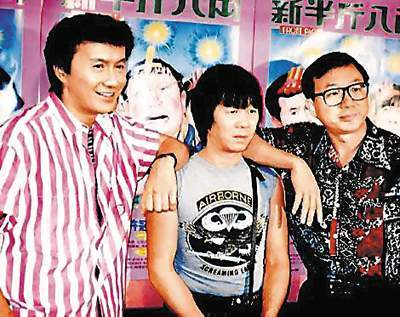
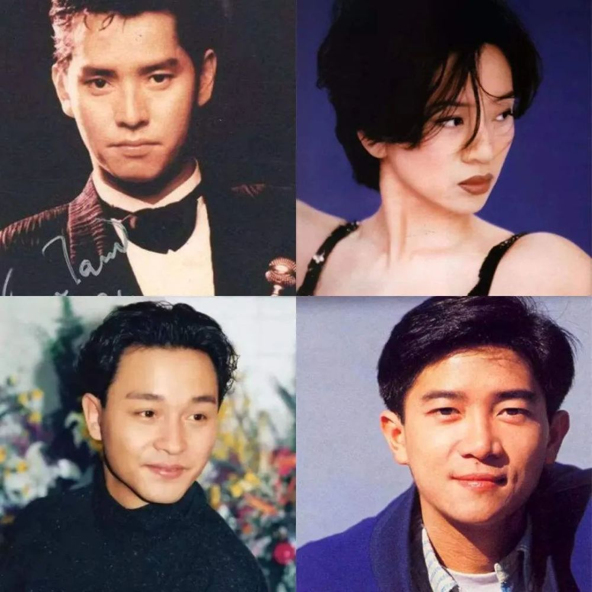
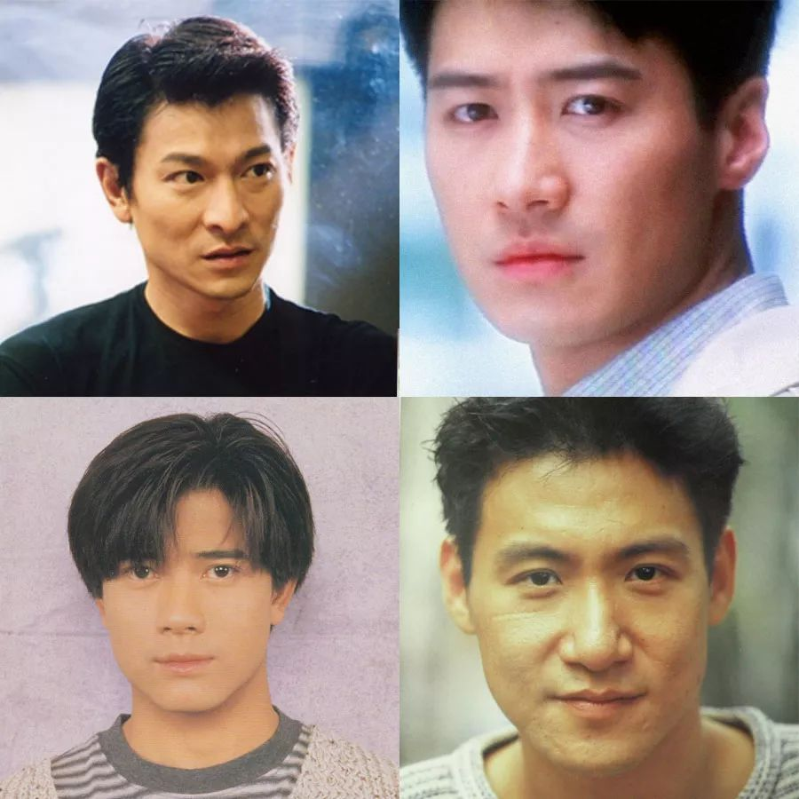

| 点击此处返回主页面 | 七十年代：蓬勃发展 |
||
 （图为许氏三兄弟：许冠杰，许冠文，许冠英） 此时的香港，经济腾飞，位列亚洲四小龙之一，本土文化意识随之崛起，曾经以国语歌 西洋歌为主的 香港出现了自己的文化输出，被视为粤语歌的开山鼻祖的许冠杰写出了第一首真正意义上的粤语歌曲《我地呢班打工仔》，其中以罗文，甄妮，徐小凤为代表的早期粤语歌手开始大放光彩。
|
|||
八十年代：欣欣向荣 |
|||
| 回到顶部 |  八十年代的粤语歌坛进入黄金时代,七十年代的前辈歌手，仍旧热度不减，又有一些新晋歌手，大放异彩，其中以“三王一后”谭张梅陈：谭咏麟，张国荣，梅艳芳，陈百强为代表的天皇巨星几乎垄断所有大大小小的音乐奖项，后辈歌手也异彩纷呈，百花齐放，每位歌手都独具特色，自此粤语歌坛进入全盛时代。 |
|
|
九十年代：日中则移 |
|||
| 回到顶部 |
 (四大天王：刘德华，黎明，郭富城，张学友） 随着三王一后逐渐退出音乐奖项的角逐，顶层歌星出现真空期，于是以刘德华张学友郭富城黎明组成的四大天王逐渐取代三王一后，统治歌坛，女歌手以叶倩文，王菲，林忆莲，邝美云为代表的。延续八十年代的热浪，歌坛依旧百花齐放，随之进入了偶像时代，表面上看一片繁荣，但内在已经有衰退的隐隐趋势，一些公司开始只注重流量，歌曲质量良莠不齐，业内崇尚拜金主义，虽然有许多实力派歌手，但已无法挽回歌坛衰退的大趋势。 |
||
新世纪： 夕阳余晖
|
|||
| 新世纪前后，四大天王开始逐渐淡出，新晋歌手依然火爆，出现郑秀文，陈慧琳，许志安，陈奕迅，谢霆锋为代表的天王天后级别人物，但香港乐坛大势已去，内陆歌坛开始崛起，许多香港歌手开始转向内陆发展，与内陆合作，更加重了香港市场的衰退。到10年后，渐渐地，已没有严格意义上的香港歌手，香港乐坛已经名存实亡。曾经名扬海外的香港歌坛落下了帷幕。 | |||